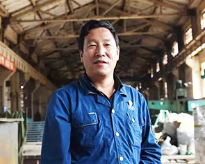

Home Page>>Comments
Geng jiasheng: try to do everything normal

"Keep trying to do everything normal." It's a phrase frequently used by geng jiasheng, a 54-year-old auto maker from yunnan metallurgical kunming heavy industry co.
Geng jiasheng, tall and thin, always wears a smile. From a general painter to yunnan machinery processing industry "a knife", and then cross the border to develop environmental toilets; From a zero-based apprentice to a national model worker to the 19th party representative, geng jiasheng never stopped moving forward.
Geng jiasheng was born in a family of bicycle workers. Five of his parents and four siblings are bicycle workers, while six are party members.
Recently, in the kunming heavy industry tower crane workshop, the reporter met geng jiasheng. He and a few of his fellow workmen were in front of a small flat - topped - box - like house, communicating incessantly. The front of the small house is prominently displayed with the words "zero emission mobile eco-environmental toilet". "Our zero-emission eco-toilet on the street broke down and was transported back to the workshop overnight until 4am. This morning, we came back together to find the cause and improve the process. Geng jiasheng told reporters.
In 2016, the transformational kunming heavy industry reached a cooperation with a private enterprise to jointly develop an environmental toilet. "At first I thought it was just a simple installation of an external structure, but then I realized it was much more complicated than that." The burden is on the shoulder geng jiasheng, get only a schematic diagram, not even design drawing, the difficulty can be imagined.
For this work, geng jiasheng led the innovation team with no little thought. "Look up information, ask people, learn from scratch. Three months before and after, boil how many night, finally the "hard bone" gnawed down."
Geng jiasheng was not satisfied after he changed the concept into a real object. With the support of the enterprise, he continuously improved the toilet. Today, environmentally friendly toilets have developed to the fourth generation, and more and more orders are flying in kunming heavy industry.
"A lathe operator's knife, sharpening knife is the most basic, is also the most difficult." Geng jiasheng said his work is simple to say is sharpening knives, difficult to say is good knife. In his workshop, he kept a box of tools left to him by his father.
"These two tools are very significant. My father left me one; Another two-headed tool, one of which was sharpened by the master, and the other by me." These are two of geng's most valuable pieces to date.
These two knives are not good looking and it is hard for the layman to see their beauty. "In those days, the master demonstrated the key points once, and when I finished grinding one end, he took a large basket of waste knives and asked me to practice, grinding it for five or six hours a day." Geng jiasheng said he sharpened the knife for a week.
For geng jiasheng, one of these two knives means the inheritance of traditional skills, and the other marks a serious attitude to do one thing perfectly. Whenever he was confused, he would take a look.
Over the past 30 years, we have been grinding away the impetuosity, grinding out patience, grinding out fineness and grinding to the top. "Each tool has to be manually polished on a 3,000-rpm grinder. It takes 10 to 20 a month more and 3 to 5 less. It takes up to 20 different knives to process a piece."
Over the years, geng jiasheng led the team to complete more than 500 items of process compilation and drawing improvement for products such as wire drawing machine and rubber crepe machine, as well as over 400 items of production processes such as lifting part of tower machine and slide groove of rewinding machine.
With the spirit of "pursuing excellence and striving for perfection" in mind, this old craftsman is taking practical actions to highlight the new mission and bring the voice of frontline skilled workers to the 19th CPC national congress.